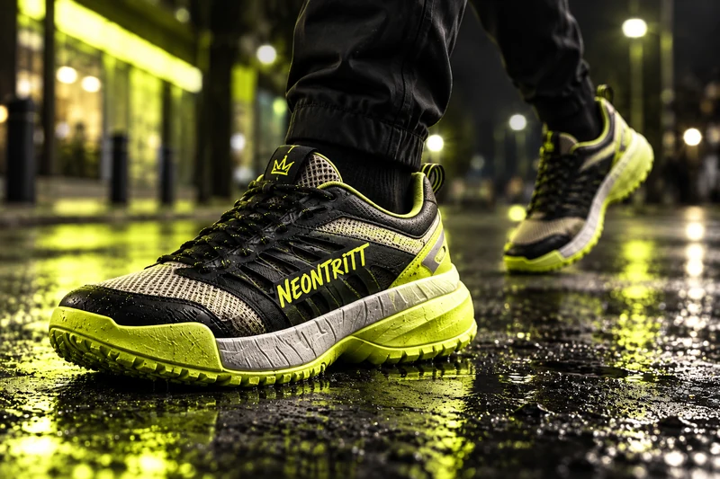

Content & Social
Ein guter Einstieg und eine erkennbare Serie geben Content eine Richtung. Wir entwerfen dafür Motive, kurze Texte und einen machbaren Redaktionsplan.
Leistungsmodell im GRELLWERK-Konzept. Die Projektbeispiele sind freie Studien.

Schön gepostet, trotzdem ignoriert
Ein kurzer Clip braucht einen verständlichen Einstieg. Ein Produktdetail, ein Satz oder eine Bewegung kann diesen Einstieg tragen.
Welche Variante funktioniert, hängt von Inhalt, Publikum und Plattform ab. Im Konzept werden Varianten vorbereitet; ihre Wirkung bleibt bis zum Test offen.
Format schlägt Hochglanz
Wiederkehrende Motive und eine erkennbare Sprache verbinden einzelne Beiträge. Der Redaktionsplan muss zur verfügbaren Zeit und zum Material passen.
Was drinsteckt
- Hook-Varianten und Schnittideen für kurze Videos
- Plattform-nativ für TikTok, Instagram & YouTube Shorts
- Redaktionsplan mit Reaktionsfenster für Trends
- Community-Management, das mitredet statt moderiert
Die Filme in diesem Portfolio sind bearbeitete Stockaufnahmen. Eigene Motive und Texte geben ihnen den Bezug zur jeweiligen Markenstudie.
Vom Hook zur Maschine
Drei, vier Formate definieren, die wiederholbar funktionieren.
Dreh und Schnitt im Wochentakt — schnell, plattform-nativ.
Hooks gegeneinander, Winner werden zur Vorlage.
Was zieht, wird befeuert — organisch und mit Paid.
Was auf dem Tisch liegt
Konzeptbeispiel KOLD BREW: Krone, Dose und Nacht bilden die Grundlage einer wiedererkennbaren Motivserie. Die gezeigten Filmloops sind Stock-Studien; es gibt keine gemessenen Reel-Aufrufe.
Konzeptbeispiel ansehen ↗